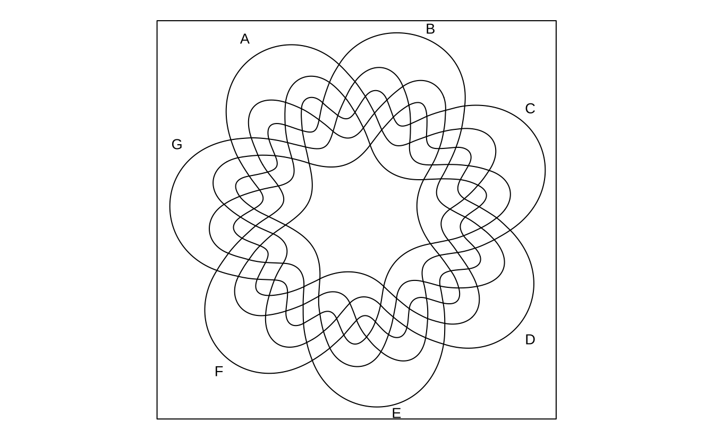

knitr::include_graphics("https://vnote-1251564393.cos.ap-chengdu.myqcloud.com/20231020095321.png")
本章节主要介绍如何开发一个 R 包，包括如何初始化一个 R 包，如何添加代码和文档，如何测试和上传，如何分发（dev/stable）等。
在 R 语言的圈子里面，流行这个一句俏皮话——“包治百病”。它的含义是，在 R 语言中，包（package）是解决问题的工具，就像药物一样，可以治疗各种问题。
开发 R 包的第一步，不妨建立一个开发者档案。最佳的地方便是 GitHub 了。GitHub 是世界上最大的代码托管平台，也是开发者们展示自己才华的舞台。
我的 GitHub 主页是：https://github.com/gaospecial。从这里可以看到我的所有项目，包括 R 包。GitHub 会记录你所有的活动，包括提交代码、创建 issue、PR 等。并根据这些记录为你的水平打分。主页上出现一个“A”，说明你已经是一个合格的开发者了（Figure 33.1）。
knitr::include_graphics("https://vnote-1251564393.cos.ap-chengdu.myqcloud.com/20231020095321.png")在这个项目中，我会以自己开发的 ggVennDiagram 包(Gao and Dusa 2024)为例，介绍开发一个 R 包的始末。
正如这个包的名字一样，它最初的需求是画一个韦恩图。并基于图形语法在韦恩图的不同区域填充上不同的颜色，以表示每个子集中对象的多少。
我们知道，韦恩图是用来表示集合之间关系的图。它最初是由数学家约翰·韦恩（John Venn）在 1881 年发明的。作为一种非常基础的图表，它在生物信息学、统计学、计算机科学等领域有着广泛的应用。然而，在 ggVennDiagram 包之前，对于绘制韦恩图，现有 R 包要么功能有限，要么使用不便。
当时可用的绘制韦恩图的工具有下列这些：
VennDiagramcolorfulVennPlotvennnVennReulerrvenneulergplotsggVennDiagramggvenn在开发之前，需要进行系统的调研。当时，我还专门写了一个文档比较这些包的优缺点（https://venn.bio-spring.top/）。
# 安装这些包
cran_packages <- c("VennDiagram","gplots","venn",
"eulerr","venneuler")
xfun::pkg_load2(cran_packages)
# GitHub
if (!requireNamespace("ggvenn")){
remotes::install_github("yanlinlin82/ggvenn")
}假设我们有一个基因列表，现在分别使用上面这些软件包绘制韦恩图。
genes <- paste0("gene",1:1000)
set.seed(20210302)
gene_list <- list(A = sample(genes,100),
B = sample(genes,200),
C = sample(genes,300),
D = sample(genes,200))
library(dplyr)VennDiagramVennDiagram (Chen 2022) 是当时最流行的韦恩图绘制工具。
library(VennDiagram)
VennDiagram <- venn.diagram(x = gene_list, filename = NULL)
cowplot::plot_grid(VennDiagram)它提供了基本的函数来绘制欧拉图。
venn.plot <- draw.triple.venn(
area1 = 65,
area2 = 75,
area3 = 85,
n12 = 35,
n23 = 15,
n13 = 25,
n123 = 5,
category = c("First", "Second", "Third"),
fill = c("blue", "red", "green"),
lty = "blank",
cex = 2,
cat.cex = 2,
cat.col = c("blue", "red", "green"),
euler.d = TRUE
)
cowplot::plot_grid(venn.plot)它还提供了一些辅助函数来获取韦恩图的分割。
get.venn.partitions(gene_list) %>% dplyr::as_tibble()# A tibble: 15 × 7
A B C D ..set.. ..values.. ..count..
<lgl> <lgl> <lgl> <lgl> <chr> <named list> <int>
1 TRUE TRUE TRUE TRUE A∩B∩C∩D <chr [1]> 1
2 FALSE TRUE TRUE TRUE (B∩C∩D)∖(A) <chr [7]> 7
3 TRUE FALSE TRUE TRUE (A∩C∩D)∖(B) <chr [2]> 2
4 FALSE FALSE TRUE TRUE (C∩D)∖(A∪B) <chr [41]> 41
5 TRUE TRUE FALSE TRUE (A∩B∩D)∖(C) <chr [5]> 5
6 FALSE TRUE FALSE TRUE (B∩D)∖(A∪C) <chr [25]> 25
7 TRUE FALSE FALSE TRUE (A∩D)∖(B∪C) <chr [12]> 12
8 FALSE FALSE FALSE TRUE (D)∖(A∪B∪C) <chr [107]> 107
9 TRUE TRUE TRUE FALSE (A∩B∩C)∖(D) <chr [5]> 5
10 FALSE TRUE TRUE FALSE (B∩C)∖(A∪D) <chr [48]> 48
11 TRUE FALSE TRUE FALSE (A∩C)∖(B∪D) <chr [22]> 22
12 FALSE FALSE TRUE FALSE (C)∖(A∪B∪D) <chr [174]> 174
13 TRUE TRUE FALSE FALSE (A∩B)∖(C∪D) <chr [10]> 10
14 FALSE TRUE FALSE FALSE (B)∖(A∪C∪D) <chr [99]> 99
15 TRUE FALSE FALSE FALSE (A)∖(B∪C∪D) <chr [43]> 43colorfulVennPlotcolorfulVennPlot 这个包可以指定每个区域的填充颜色，但第一个必需的参数是一个长度为 15 的数字向量，其中特定名称按适当顺序排列，这使得设置和使用非常复杂。
此外，填充颜色需要一个一个地指定，这也很复杂。
library(colorfulVennPlot)
Colors <- c('red', 'yellow', 'green', 'pink', 'darkgreen','blue','lightblue','tan',
'yellowgreen','orange','purple','white','grey','plum','brown')
regions <- seq(15)
names(regions) <- c('1000', '0100', '1100', '0010', '1010', '0110', '1110', '0001',
'1001', '0101', '1101', '0011', '1011', '0111', '1111')
plotVenn4d(regions, Colors=Colors)colorfulVennPlot 这个包现在已经无法安装和使用了。其绘图效果参见 https://venn.bio-spring.top/。
vennvenn 这个包(Dusa 2024)使用起来非常简单。
library(venn)
venn(gene_list)venn 也支持不同的形状。
venn(x = gene_list, ellipse = TRUE)venn 支持 ggplot，但依赖于 ggpolypath，这是一个不流行的包。
不过，venn 有自己的特别之处，即它可以绘制多达 7 个集合的韦恩图。
venn::venn(5)venn::venn(6)venn::venn(7)
除此之外，venn 接受多种格式的输入。这在基于逻辑关系绘制韦恩图时非常有用。
intersections <- c('~A~B~C~D', '~A~B~CD', '~A~BC~D', '~A~BCD', '~AB~C~D', '~AB~CD', '~ABC~D', '~ABCD', 'A~B~C~D', 'A~B~CD', 'A~BC~D', 'A~BCD', 'AB~C~D', 'AB~CD', 'ABC~D', 'ABCD')
venn(intersections, zcol = colors()[sample(1:657, 16)])venn("A*D, A*B*~C + B*C*~D", zcol = c("blue", "red"))venn("AD, AB~C + BC~D", zcol = c("blue", "red"))
venn("1-----")
venn("100 + 110 + 101 + 111")eulerreulerr (Larsson 2024)生成面积比例的欧拉图，显示集合之间的关系（交集、并集和不相交）。
不同于韦恩图，欧拉图只显示相关的集合关系。
韦恩图是欧拉图的更严格的版本。一个韦恩图必须包含所有 \(2^n\) 逻辑上可能的区域重叠，表示其组成部分集合的所有组合。
library(eulerr)
venn_plot <- venn(gene_list)
plot(venn_plot)euler_plot <- euler(gene_list)
plot(euler_plot)在 2021 年 3 月 9 日，可以向 eulerr 提供以下输入：
euler() 中的参数类型），# 作为逻辑矩阵输入
set.seed(1)
mat <- cbind(
A = sample(c(TRUE, TRUE, FALSE), 50, TRUE),
B = sample(c(TRUE, FALSE), 50, TRUE),
C = sample(c(TRUE, FALSE, FALSE, FALSE), 50, TRUE)
)
(fit2 <- euler(mat)) original fitted residuals regionError
A 13 13 0 0.008
B 4 4 0 0.002
C 0 0 0 0.000
A&B 17 17 0 0.010
A&C 5 5 0 0.003
B&C 1 0 1 0.024
A&B&C 2 2 0 0.001
diagError: 0.024
stress: 0.002 诊断函数很好。
error_plot(fit2)venneulervenneuler (Wilkinson 2024) 依赖于 JAVA 运行环境，这使得它的安装对于非 JAVA 用户来说非常痛苦。
除此之外，它只支持列表输入。
library(venneuler)
combinations <- c(A=0.3, B=0.3, C=1.1, "A&B"=0.1, "A&C"=0.2, "B&C"=0.1 ,"A&B&C"=0.1,"D"=0.2,"C&D"=0.1)
vd <- venneuler(combinations)
plot(vd)RVennRVenn (Akyol 2019) 是一个处理多个集合的包，而基础 R 函数（intersect、union 和 setdiff）只支持两个集合。
该函数 overlap、unite 和 discern 抽象了细节，因此只需构造宇宙并选择要操作的集合即可通过索引或集合名称进行操作。
RVenn 提供了一个 ggvenn() 函数来绘制 2-3 维的韦恩图。在这种情况下，它的优势主要依赖于集合操作函数。
library(RVenn)
RVenn::ggvenn(Venn(gene_list[1:3]))gplotsgplots (Warnes et al. 2024) 提供了各种 R 编程工具来绘制数据。它支持多达五个集合的韦恩图。
library(gplots)
venn(gene_list)ggvenn在当时，还有一个正在开发中的 ggvenn (Yan 2025)包，它可以显示多边形区域中的元素，比较好的支持图形语法。
library(ggvenn)
ggvenn::ggvenn(gene_list)ggvenn 可以显示多边形区域中的元素。
a <- list(A = c("apple", "pear", "peach"),
B = c("apple", "lemon"))
ggvenn::ggvenn(a, show_elements = TRUE)ggvenn::ggvenn(a, show_elements = TRUE, label_sep = "\n") # show elements in line最初我并没有想开发一个包，只是想画一个韦恩图。而当发现所有的包都不能满足我的需求时，我决定自己动手，丰衣足食。
韦恩图是一种几何图形，它只有简单的几类元素组成，分别是集合、子集以及标注。在数据层面，每个集合都 包含多个元素，集合间的元素可以相同或者不同；在图形上，它们可以通过线条、区域、文本等表示。因此，要画出它，需要做好以下几件事（以 4 个集合为例）：
椭圆的生成可以借助简单的几何函数。在 R 中，可以使用 plot 结合 cos 和 sin 函数绘制椭圆。例如：
# 椭圆参数
a = 5 # 长轴
b = 3 # 短轴
theta = seq(0, 2 * pi, length.out = 100)
# 计算椭圆上的点
x = a * cos(theta)
y = b * sin(theta)
# 绘制椭圆
plot(x, y, type = "l", asp = 1, xlab = "X", ylab = "Y", main = "椭圆")
如果需要旋转椭圆，可以添加旋转矩阵：
angle = pi / 6 # 旋转角度
x_rot = x * cos(angle) - y * sin(angle)
y_rot = x * sin(angle) + y * cos(angle)
plot(x_rot, y_rot, type = "l", asp = 1, xlab = "X", ylab = "Y", main = "旋转后的椭圆")这样就能生成并绘制不同方向的椭圆。为了让 4 个椭圆的位置和大小合适，我们以 VennDiagram 包中的 venn.diagram 函数生成的椭圆为参考，并使用 ggplot2 包中的 geom_polygon 函数绘制椭圆。
VennDiagram 使用 ell2poly 函数来画 4 个椭圆，我把其中的参数拿出来，生成了椭圆的数据，并使用 ggplot 画了出来。
library(VennDiagram)
library(tidyverse)
library(cowplot)
sets <- 4
ellipse_4d_parameters <- list(c(0.65, 0.47, 0.35, 0.20, 45),
c(0.35, 0.47, 0.35, 0.20, 135),
c(0.50, 0.57, 0.33, 0.15, 45),
c(0.50, 0.57, 0.35, 0.15, 135))
ellipse_4d_coordinations <- lapply(1:sets,function(i){
x <- ellipse_4d_parameters[[i]]
do.call("ell2poly",as.list(c(x,n.sides=3000))) %>%
data.frame() |>
mutate(x = round(x,4),
y = round(y,4))
})使用ggplot2的geom_polyon()函数画图。
df <- bind_rows(ellipse_4d_coordinations, .id = "group")
ggplot(df,aes(x,y)) + geom_polygon(aes(group=group)) + coord_equal()可以使用其它映射改变填充色，线条属性等。
ggplot(df,aes(x,y)) +
geom_polygon(aes(group=group),color="grey",fill=rep(1:4,each=3001),alpha=1/4,size=2,lty="dashed") +
# geom_text(aes(label=group),check_overlap = T) +
coord_equal()那么，现在要解决的只剩下一个问题：确定每个 Venn 图区域的坐标，这样调用 ggplot2 的 geom_polygon() 函数画出图片就可以了。
在数据层面，每个集合都 包含多个元素，集合间的元素可以相同或者不同。R 中提供了 union()、intersect()、setdiff() 等函数来进行集合计算，借助这些函数可以获取元素的子集。
A <- c("a", "b", "c")
B <- c("b", "c", "d")
union(A,B)[1] "a" "b" "c" "d"intersect(A,B)[1] "b" "c"setdiff(A,B)[1] "a"在图形层面，R 中提供了 st_union()、st_intersect()、st_difference() 等函数来进行集合计算，借助这些函数可以获取图形的子集Figure 33.2。
# 将 4 个椭圆转变为 sf 对象
library(sf)
polygons = lapply(ellipse_4d_coordinations,function(x)st_polygon(list(as.matrix(x))))
# 计算交集
par(mfrow=c(2,2))
A <- st_difference(st_difference(st_difference(polygons[[1]],polygons[[2]]),polygons[[3]]),polygons[[4]])
plot(A,main="A")
ABCD <- st_intersection(st_intersection(st_intersection(polygons[[1]],polygons[[2]]),polygons[[3]]),polygons[[4]])
plot(ABCD,main="ABCD")
ABC <- st_difference(st_intersection(st_intersection(polygons[[1]],polygons[[2]]),polygons[[3]]),polygons[[4]])
plot(ABC,main = "ABC")
AB <- st_difference(st_intersection(polygons[[1]],polygons[[2]]),st_union(polygons[[3]],polygons[[4]]))
plot(AB, main = "AB")为了让文字标注到图形的中心位置，需要计算每个图形的中心点坐标。这个过程可以借助 sf 包中的 st_centroid() 函数来完成。
library(sf)
library(ggplot2)
nc <- st_read(system.file('shape/nc.shp', package = "sf"), quiet = TRUE)
# using sf
sf_cent <- st_centroid(nc)
# plot both together to confirm that they are equivalent
ggplot() +
geom_sf(data = nc, fill = 'white') +
geom_sf(data = sf_cent, color = 'red')首先，获取所有图形子集。
library(sf)
A <- st_difference(st_difference(st_difference(polygons[[1]],polygons[[2]]),polygons[[3]]),polygons[[4]])
B <- st_difference(st_difference(st_difference(polygons[[2]],polygons[[1]]),polygons[[3]]),polygons[[4]])
C <- st_difference(st_difference(st_difference(polygons[[3]],polygons[[1]]),polygons[[2]]),polygons[[4]])
D <- st_difference(st_difference(st_difference(polygons[[4]],polygons[[1]]),polygons[[3]]),polygons[[2]])
AB <- st_difference(st_intersection(polygons[[1]],polygons[[2]]),st_union(polygons[[3]],polygons[[4]]))
AC <- st_difference(st_intersection(polygons[[1]],polygons[[3]]),st_union(polygons[[2]],polygons[[4]]))
AD <- st_difference(st_intersection(polygons[[1]],polygons[[4]]),st_union(polygons[[3]],polygons[[2]]))
BC <- st_difference(st_intersection(polygons[[3]],polygons[[2]]),st_union(polygons[[1]],polygons[[4]]))
BD <- st_difference(st_intersection(polygons[[4]],polygons[[2]]),st_union(polygons[[3]],polygons[[1]]))
CD <- st_difference(st_intersection(polygons[[3]],polygons[[4]]),st_union(polygons[[1]],polygons[[2]]))
ABC <- st_difference(st_intersection(st_intersection(polygons[[1]],polygons[[2]]),polygons[[3]]),polygons[[4]])
ABD <- st_difference(st_intersection(st_intersection(polygons[[1]],polygons[[2]]),polygons[[4]]),polygons[[3]])
ACD <- st_difference(st_intersection(st_intersection(polygons[[1]],polygons[[4]]),polygons[[3]]),polygons[[2]])
BCD <- st_difference(st_intersection(st_intersection(polygons[[4]],polygons[[2]]),polygons[[3]]),polygons[[1]])
ABCD <- st_intersection(st_intersection(st_intersection(polygons[[1]],polygons[[2]]),polygons[[3]]),polygons[[4]])然后，将所有图形子集放到一个列表中。计算多边形的参数。
ggpolygons <- list(A=A,B=B,C=C,D=D,AB=AB,AC=AC,AD=AD,BC=BC,BD=BD,CD=CD,ABC=ABC,ABD=ABD,ACD=ACD,BCD=BCD,ABCD=ABCD)
polygon_names <- names(ggpolygons)
ggpolygons_df <- lapply(1:length(ggpolygons), function(i){
df <- unlist(ggpolygons[[i]]) %>% matrix(ncol = 2) %>% data.frame()
colnames(df) <- c("x","y")
df$group <- polygon_names[[i]]
return(df)
})
data_ploygons <- do.call(rbind,ggpolygons_df)计算多边形中心点。
center_df <- lapply(ggpolygons, st_centroid) %>% unlist %>% matrix(byrow = T,ncol=2) %>% data.frame()
center_df$group <- polygon_names
colnames(center_df) <- c("x","y","group")
data_centers <- center_df在正确的位置添加文字，查看一下结果：
ggplot(data_ploygons,aes(x,y,fill=group)) +
geom_polygon(show.legend = F) +
geom_text(aes(label=group),data=data_centers) +
coord_equal() +
theme_void()开发一个画 Venn 图的包，它可以：
VennDiagram 和 gplots 的 Venn 图;scaled = True。data.frame 或者 matrix 输出, 通过指定 Threshold 自行创建存在矩阵, 按列分组, 按行计数;list 输入；upsetR 绘制多种组合条件下的无限 Venn 图.library(sf)
A <- st_difference(st_difference(st_difference(polygons[[1]],polygons[[2]]),polygons[[3]]),polygons[[4]])
B <- st_difference(st_difference(st_difference(polygons[[2]],polygons[[1]]),polygons[[3]]),polygons[[4]])
C <- st_difference(st_difference(st_difference(polygons[[3]],polygons[[1]]),polygons[[2]]),polygons[[4]])
D <- st_difference(st_difference(st_difference(polygons[[4]],polygons[[1]]),polygons[[3]]),polygons[[2]])
# ...function(venn, slice = "all"){
overlap = overlap(venn, slice = slice)
if (slice[1] == "all" | identical(venn@sets[slice], venn@sets)){
discern = NULL
return(overlap)
} else {
discern = discern(venn, slice1 = slice)
return(sf::st_intersection(overlap, discern))
}library(ggVennDiagram)
genes <- paste("gene",1:1000,sep="")
set.seed(20210419)
x <- list(A=sample(genes,300),
B=sample(genes,525),
C=sample(genes,440),
D=sample(genes,350))library(ggplot2)
ggVennDiagram(x) + scale_fill_gradient(low="white",high = "red")x <- list(A=sample(genes,300),
B=sample(genes,525),
C=sample(genes,440),
D=sample(genes,350),
E=sample(genes,200),
F=sample(genes,150),
G=sample(genes,100))
# 七维
p7 = ggVennDiagram(x, label = "none", edge_size = 2) +
scale_fill_distiller(palette = "RdBu") +
theme(legend.position = "none")
# 六维
p6 = ggVennDiagram(x[1:6], label = "none", edge_size = 2) +
scale_fill_distiller(palette = "RdBu") +
theme(legend.position = "none")
# 五维
p5 = ggVennDiagram(x[1:5], label = "none", edge_size = 2) +
scale_fill_distiller(palette = "RdBu") +
theme(legend.position = "none")
# 四维
p4 = ggVennDiagram(x[1:4], label = "none", edge_size = 2) +
scale_fill_distiller(palette = "RdBu") +
theme(legend.position = "none")
# 三维
p3 = ggVennDiagram(x[1:3], label = "none", edge_size = 2) +
scale_fill_distiller(palette = "RdBu") +
theme(legend.position = "none")
# 二维
p2 = ggVennDiagram(x[1:2], label = "none", edge_size = 2) +
scale_fill_distiller(palette = "RdBu") +
theme(legend.position = "none")
cowplot::plot_grid(p7, p6, p5, p4, p3, p2, ncol = 3, labels = "AUTO")为了简化 R 包的开发，社区开发了多个工具，包括：
你不用记住这些工具，它们会在你开发 R 包的过程中自动出现。
软件开发通常使用 Git 管理代码，使用 GitHub 托管代码。因此，在开始开发之前，需要初始化项目仓库。这个工作可以交给 usethis 包来完成。
library(devtools)
create_package("mypackage")此外，也可以通过 RStudio 的菜单来完成。方法是：
File -> New Project -> PackageGit 选项，点击 Create Project在 RStudio 中，可以很方便地添加代码和文档。在终端中输入 use_r() 函数，可以添加一个 R 脚本。该函数会自动在 R/ 目录下创建一个 myfunction.R 文件。并且，将该文件打开进入编辑状态。
use_r("myfunction")在这个文件中，我们可以编写自己的函数。这里，我们编写一个简单的函数，计算两个数的和。
myfunction <- function(a, b) {
return(a + b)
}运行 load_all() 函数，可以加载软件包中包含的所有函数。
load_all()这时，就可以调用 myfunction() 函数计算两个数的和。
myfunction(1, 2)虽然这个函数已经可以运行，但是它还缺乏必要的文档。所以，接下来给它添加文档。文档直接在源代码中以 roxygen2 的格式编写（通常是英文）。
#' 计算两个数的和
#'
#' @param a 第一个数
#' @param b 第二个数
#' @return 两个数的和
#' @export
myfunction <- function(a, b) {
return(a + b)
}这是，运行 document() 函数，可以生成文档。运行后，在 man/ 目录下，会生成一个 myfunction.Rd 文件。这个文件就是文档。因为文档中有 @export 标签，所以这个函数会被更新到 NAMESPACE 文件中，这样就可以被正常调用了。
document()有了文档，就可以使用 ?myfunction 查看函数的使用方法。
?myfunction现在，就可以测试这个只有一个函数的软件包了。
check()check() 函数会运行一系列的测试，包括：
如果没有问题，说明这个软件包符合开发规范。
DESCRIPTION 文件是软件包的配置文件，包括软件包的名称、版本、依赖等信息。这些信息需要根据实际情况进行修改。
edit_file("DESCRIPTION")下面是 DESCRIPTION 文件的示例，这里面的 Title/Version/Author/Maintainer/Description 等都是需要开发者根据实际情况进行修改完善的。
Package: ggVennDiagram
Type: Package
Title: A 'ggplot2' Implement of Venn Diagram
Version: 1.5.3
Authors@R: c(
person("Chun-Hui","Gao", email="gaospecial@gmail.com", role=c("aut","cre"), comment=c(ORCID = "0000-0002-1445-7939")),
person("Guangchuang", "Yu", email = "guangchuangyu@gmail.com", role = c("ctb"), comment = c(ORCID = "0000-0002-6485-8781")),
person("Adrian", "Dusa", email = "dusa.adrian@unibuc.ro", role = c("aut","cph"),
comment = c(ORCID = "0000-0002-3525-9253",
note = "Adrian Dusa is the author and copyright holder of venn, where ggVennDiagram imports the polygon coordinates enabling 5 - 7 sets Venn diagram.")),
person("Turgut Yigit", "Akyol", email = "tyakyol@gmail.com", role = c("ctb"), comment=c(ORCID = "0000-0003-0897-7716"))
)
Maintainer: Chun-Hui Gao <gaospecial@gmail.com>
Description: Easy-to-use functions to generate 2-7 sets Venn or upset plot in publication quality.
'ggVennDiagram' plot Venn or upset using well-defined geometry dataset and 'ggplot2'. The shapes of 2-4 sets
Venn use circles and ellipses, while the shapes of 4-7 sets Venn use irregular polygons (4 has both forms), which
are developed and imported from another package 'venn', authored by Adrian Dusa. We provided internal functions to
integrate shape data with user provided sets data, and calculated the geometry of every regions/intersections
of them, then separately plot Venn in four components, set edges/labels, and region edges/labels.
From version 1.0, it is possible to customize these components as you demand in ordinary 'ggplot2' grammar.
From version 1.4.4, it supports unlimited number of sets, as it can draw a plain upset plot automatically when
number of sets is more than 7.
Depends:
R (>= 4.1.0)
Imports:
ggplot2 (>= 3.4.0),
dplyr,
methods,
tibble,
aplot,
venn (>= 1.12),
yulab.utils,
forcats
URL: https://github.com/gaospecial/ggVennDiagram, https://gaospecial.github.io/ggVennDiagram/
License: GPL-3
Encoding: UTF-8
RoxygenNote: 7.2.3
Suggests:
testthat (>= 2.1.0),
knitr,
plotly,
RColorBrewer,
shiny,
rmarkdown,
tidyr
VignetteBuilder: knitr
LazyData: trueREADME 文件是软件包的说明文件，包括软件包的描述及基本用法。这些信息需要根据实际情况进行修改。
use_readme_rmd()开发版本的软件包，通常会托管到 GitHub 上。使用 usethis 包可以很方便地上传到 GitHub。
use_github()使用 devtools 包可以很方便地将软件包分发到 CRAN。
devtools::submit_cran()完成软件包的开发和发布后，就要开始对软件包进行维护了。软件包的维护通常包括：
维护是软件开发中非常重要的事情。GitHub 提供了多种方式来便捷软件的维护。
devtools::submit_cran() 来提交新版本的软件包到 CRAN。既为自己：你的需求是什么？
也为他人：领域的需求是什么？
安装开发版 R 包的方式
devtools::install_github("gaospecial/ggVennDiagram")remotes::install_github("gaospecial/ggVennDiagram")pak::pak("gaospecial/ggVennDiagram")